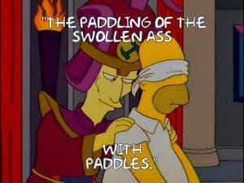
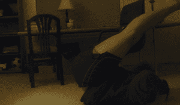
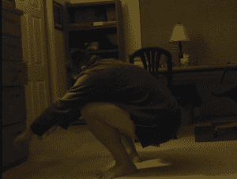
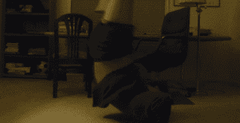
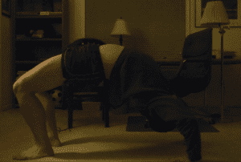

< < < Back
How To Do A Kip-Up Like A Kung Fu Master – Return Of Kings
Today’s article isn’t exactly a skill that will save your life in the future, nor is it one of the “bread and butter” methodologies of an older and more civilized age that will supercharge your fitness training, but it is a neat little trick and, I imagine, will serve to fulfill dimly remembered childhood dreams for many of those in the audience (and I include myself in that).
The kip-up is a technique that likely all of us have seen since we were young—perhaps in a kung fu movie, or a video game, or in a professional wrestling match. It seemed so simple, too: just a bit of a heave-ho from the floor, and you pop up onto your feet the epitome of grace, instantly summoning a horde of nubiles to perform the filthiest of sexual maneuvers on you.
And so you would inevitably go down on the floor, try to kip-up…and slam your ass into the floor. And again. And again. And again. For most of us, that’s where the kip-up ended, with sore asses and failure. That’s where it ended for me for many years.

But then, thanks to Paul Wade and the people at Dragon Door publishing Explosive Calisthenics, AKA Convict Conditioning 3, I discovered a comprehensive method of training the kip-up and eventually mastered this elusive skill—more accurately, I mastered the standard kip-up, Step 7 out of 10 of the kip chain. The no-hands kip-up still eludes me.
Kip-ups are often associated with martial arts curricula, “trickers,” and the like. While I would not recommend actually doing this in a fight since it’s quite possible the opponent will literally hold his fist out for you to kip your face into, I can’t deny that it looks really cool, and it trains the muscles of the hips and torso—including the erector spinae—to work explosively, which is useful in a variety of situations.
Like all of the Convict Conditioning techniques, there are a series of incremental “baby steps” for developing this skill. And without further ado:
1. The Rolling Sit-Up
This is not actually a kip at all so much as it is a method of training your muscles to assume the position that will eventually be used in the kipping. Sitting flat on the floor, roll back so your legs are straight and over your head as shown. It’s a little bit easier for beginners to start with bent knees, but to develop the strength for the no hand kip, you will eventually need straight knees
Having done this, forcefully roll forward and sit-up into the original position.

2. The Rolling Squat
It’s almost identical to the first step, but continue to roll through until you are squatting on your two feet (hunching forward is fine). Bear in mind that you are not doing any truly explosive maneuver yet.

3. The Shoulder Pop
This exercise is the first of the explosive techniques, and will teach you the proper way to kick. It is a common misconception that one kicks out to do a kip-up. I’ve always found that while the hips and chest roll forward, the feet and legs should kick straight up. That motion is what gets you to your feet.
Anyway, roll back so your legs are over your head, placing your hands by your ears. Forcefully kick your legs up while pushing with the hands. Do not roll forward, essentially just pop your back and shoulders off the floor. Hold it if you can, or even go into a headstand.

4. The Bridge Kip
Get into the stand kipping position detailed above, kick up with your legs while pushing up and forward with your hands and torso. When your feet hit the floor, you should essentially be in a bridge hold position.

It’s worth noting that from here, all of the kips are just progressively kipping higher and getting more of your body under you:
5. The Butt Kip
Get into position, kip up and forward, aiming to land in a sitting position. The key is to bend the knees towards your face, and then extend them straight, kicking UP while you push off the floor and roll the torso FORWARD.
6. The Half Kip
Do the kip-up and aim to land on your feet, even if only for a second or two before falling back onto your butt.
7. The Kip Up
By now you should know the basic technique, just kip up and try to throw yourself forward enough so that you stay on your feet. Kipping up into a stable crouch/squat is acceptable.


What makes this easier, I find, is to spread your legs a little bit wider, and to make it more difficult, you put your feet together.
Regardless of how you go about doing it, mastery of this skill will earn you the envy of millions of B-Movie fans. And when I master the no-kip…eventually, I’ll be sure to write about that as well.
Read More: How To Work Out The Lower Half Of Your Body Using Isometric Exercises